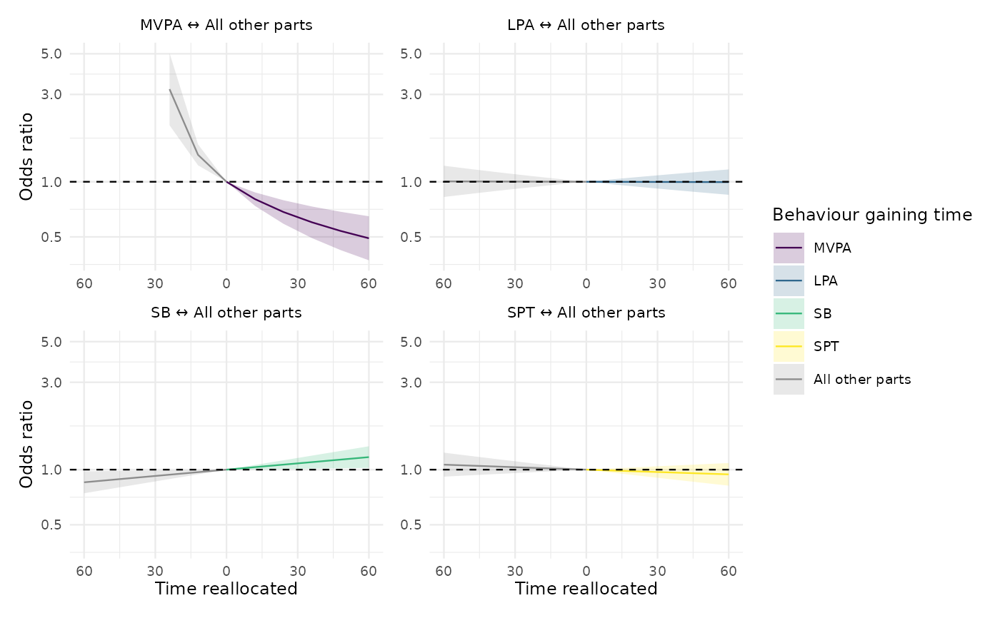
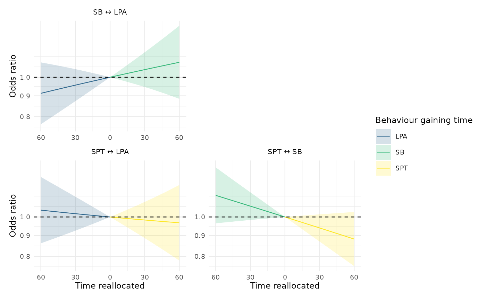
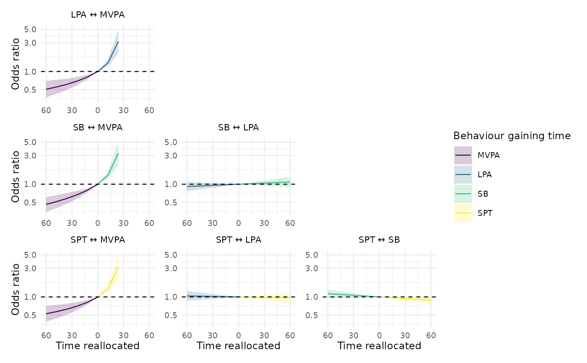
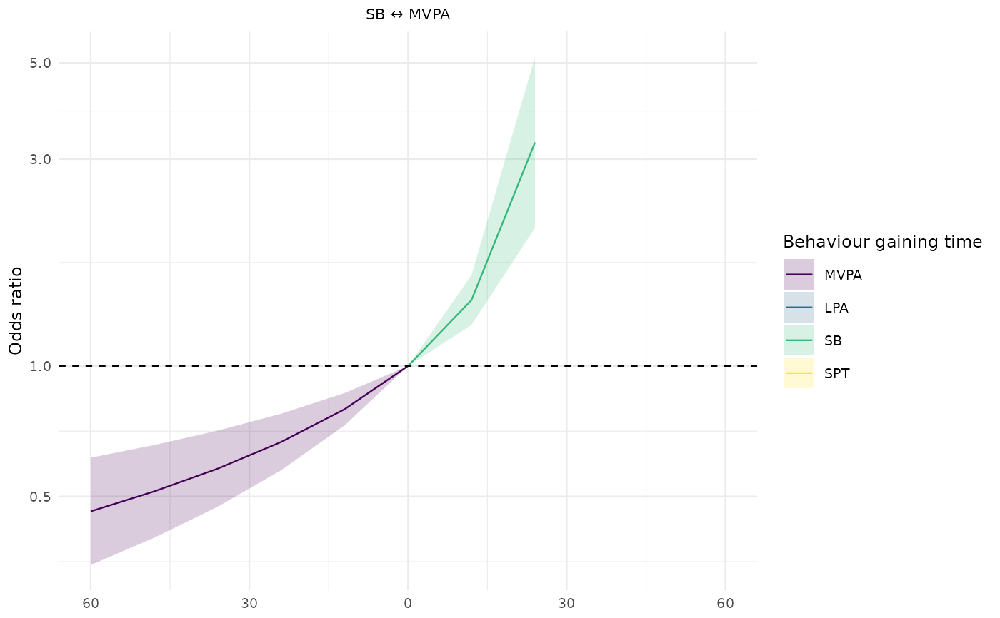
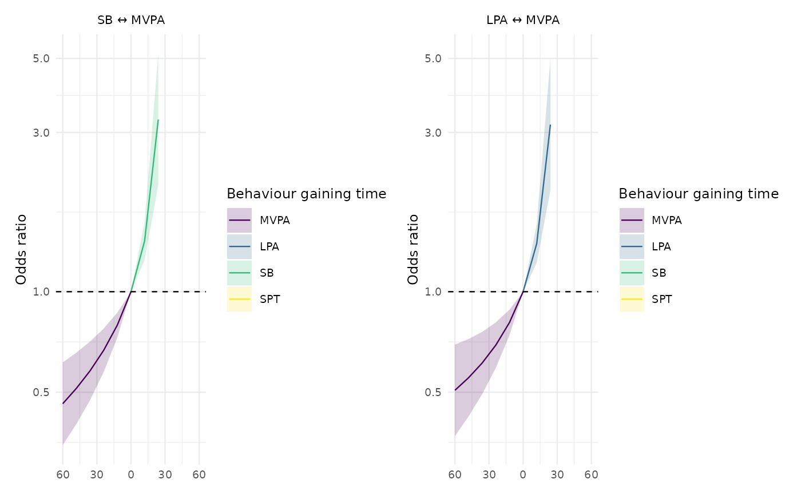

Sweeps predict_realloc() over a sequence of reallocation magnitudes in
both directions and plots each estimate with its confidence interval as a
ribbon, one panel per part pair or per part. The figure shows exactly the
estimates predict_realloc() returns for those magnitudes.
Arguments
- object
A
comp_iv/timecoda_fitfromcomp_iv().- delta_max
Maximum amount reallocated in each direction, in the composition's units. Each panel sweeps from
-delta_maxtodelta_max, capped per direction where a part would be driven non-positive at the reference composition.- n_points
Number of points in the sweep across both directions, a single positive whole number; each direction gets
ceiling(n_points / 2)of them.- type
"relative"(default) or"absolute"; passed topredict_realloc().- scheme
How time is reallocated, passed to
predict_realloc()."one-to-one"(default) draws the pairwise transfer triangle;"one-to-all"draws one panel per part, reallocating proportionally between that part and all the others.- exclude
Optional character vector of part names (not display labels) whose panels are dropped from the figure. Use it, for example, for a part whose balance is not associated with the outcome, so its panels show only noise. Excluded parts remain in the composition and still absorb their proportional share of a
"one-to-all"reallocation, so the filter changes the display only.- palette
Optional named character vector of colours keyed by part name (one colour per part). Defaults to the viridis palette (
scales::viridis_pal()) over the fitted parts. Each half of a panel is coloured by its receiving part.- legend
Draw the shared legend(s).
FALSEhides all guides.- ...
Further arguments passed to
predict_realloc():reference(which also sets the composition at which the feasible sweep is capped),at,by(one grid per level, see Details), andconf_level. Unused by the print method.- x
A
realloc_plotsobject returned byplot_realloc().
Value
Invisibly, a realloc_plots object: a list with panels, the
individual ggplot panels, and figure, the assembled patchwork
(for grouped results, one titled row per group). panels is named by the
part names of each panel, in their declared order, joined by a dot
("MVPA.SB"; "SB" under scheme = "one-to-all"). A grouped result
prefixes the group level ("female.MVPA.SB"). Part names that contain a
dot can give two panels the same name (e.g., the pairs a with b.c and
a.b with c); such panels are picked by position. The figure is drawn
as a side effect when the function is called, and printing the object
draws it again. A panel can be reused on its own or re-assembled with
patchwork::wrap_plots().
Details
The panel layout follows scheme:
"one-to-one"(default): a lower-triangular matrix, one panel per unordered part pair (no mirrored duplicate). The panels are assembled withpatchwork::wrap_plots(), and the unused upper-triangle cells are left out of the figure."one-to-all": a compact wrapped grid, one panel per part, showing the proportional reallocation between that focal part and all the others (the implicit side thatpredict_realloc()labels"(rest)").
In both schemes, each panel sweeps time in either direction, up to
delta_max units of the composition. The sweep stops where a reallocation
would drive a part to zero or below at the reference composition, so
on_invalid has no visible effect. The x-axis shows the magnitude of the
reallocation, labelled as a positive amount on both sides of zero. Colour
gives the direction, since each half of the sweep is coloured by the part
gaining time, from a shared palette (viridis by default). The pooled
"(rest)" side of a one-to-all panel is drawn in neutral grey. For relative
output, the y-axis shows odds, hazard or rate ratios (log scale, reference
line at 1) or a mean difference (reference line at 0), according to the
model; for absolute output, it shows the predicted response. All panels share
one y-axis range and one legend, and their titles use the part labels of the
declare_composition() object. The figure carries no caption.
Both halves of a panel meet at the reference value (an effect of exactly 1,
or 0 on the identity scale, at zero reallocated). An effect is significant
at the level 1 - conf_level exactly where its confidence ribbon excludes
the dashed reference line.
The reallocations can be grouped by a by covariate, by the outcome
categories of a multinomial fit, or by both. The by covariate is passed
through ..., or is the factor moderator of the fit, which
predict_realloc() uses by default. The figure then stacks one full panel
grid per group as rows, each titled with its group (e.g., sex: female,
outcome: B, or both joined by a comma). Every grid shares one y-axis
range, and the figure has one legend.
See also
comp_iv() to fit the model; predict_realloc(), which this
function sweeps over; summary.realloc() for the tabular counterpart.
Other reallocation and prediction:
optimal_composition(),
predict_realloc(),
summary.realloc()
Examples
cd <- declare_composition(timeuse, c("MVPA", "LPA", "SB", "SPT"),
closure = 1440)
fit <- comp_iv(cd, outcome = "obesity", model = "glm", family = "binomial")
plot_realloc(fit, delta_max = 60, n_points = 9)
 # Proportional (one-to-all) reallocation, one panel per part
plot_realloc(fit, delta_max = 60, n_points = 9, scheme = "one-to-all")
# Proportional (one-to-all) reallocation, one panel per part
plot_realloc(fit, delta_max = 60, n_points = 9, scheme = "one-to-all")

# The pairwise triangle without the three MVPA panels
plot_realloc(fit, delta_max = 60, n_points = 9, exclude = "MVPA")

# One panel on its own, and two panels assembled side by side
p <- plot_realloc(fit, delta_max = 60, n_points = 9)

names(p$panels)
#> [1] "MVPA.LPA" "MVPA.SB" "MVPA.SPT" "LPA.SB" "LPA.SPT" "SB.SPT"
p$panels[["MVPA.SB"]]

patchwork::wrap_plots(p$panels[c("MVPA.SB", "MVPA.LPA")], ncol = 2)
